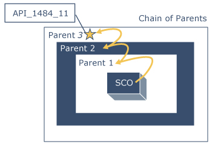

Chain of Parents

In the chain of parents, the SCOs and assets are being launched in a structure where the API Instance is in a Hypertext Markup Language (HTML) Frameset. In this case, the LMS can provide the API Instance somewhere in the hierarchy of parent frames within the frameset. The algorithm described in the IEEE standard will search for the API by walking the "chain of parents" either until the API Instance is found or until it reaches a point where there are no other parent frames.